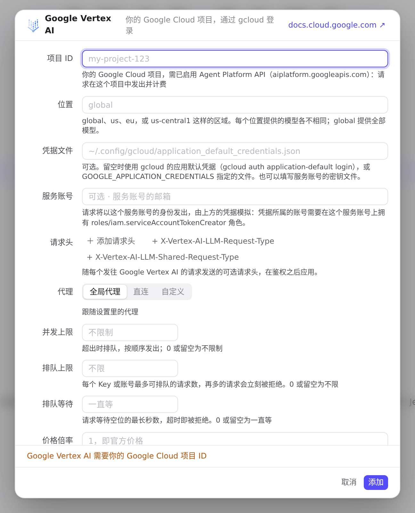
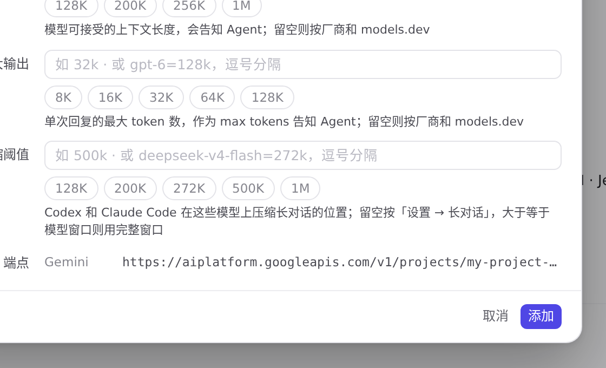
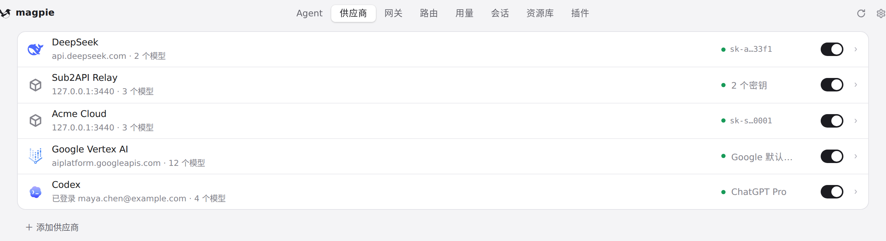
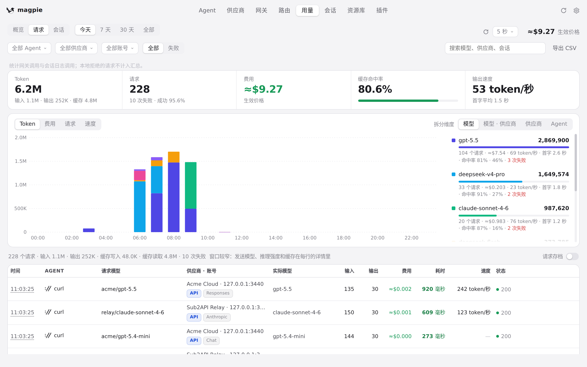
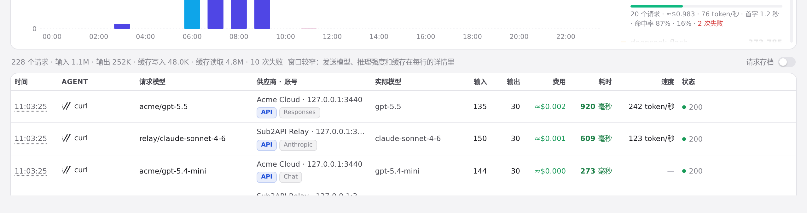

#1122 界面预览
commit 9943655 · 回到 PR · 供应商页多了 Google Vertex AI 预设：添加面板里选中它，编辑器用「项目 ID / 位置 / 凭据文件 / 服务账号」四栏取代 API 密钥，未填项目 ID 时保存被拒，填好后下方的「端点」显示该项目与位置对应的地址；列表里该供应商的徽标显示签名用的凭据（服务账号、凭据文件或 Google 默认凭据）。用量「请求」列表也把 Gemini 的 streamGenerateContent 请求标为 Gemini。
红线是鼠标走过的轨迹，红色圆环是一次点击；底部文字是这一步在做什么。空格暂停，← → 逐段查看。
 添加 Google Vertex AI 供应商 · 添加面板中的预设列表
添加 Google Vertex AI 供应商 · 添加面板中的预设列表
 添加 Google Vertex AI 供应商 · Google Vertex AI 的编辑器：项目 ID、位置、凭据文件、服务账号
添加 Google Vertex AI 供应商 · Google Vertex AI 的编辑器：项目 ID、位置、凭据文件、服务账号

添加 Google Vertex AI 供应商 · 点「添加」之后的编辑器

添加 Google Vertex AI 供应商 · 填入项目 ID 后编辑器下方的「端点」

添加 Google Vertex AI 供应商 · 添加后的供应商列表

用量「请求」列表的协议标记 · 「请求」列表：每行「供应商 · 账号」旁的协议标记

用量「请求」列表的协议标记 · 列表首行的协议标记与「实际模型」列